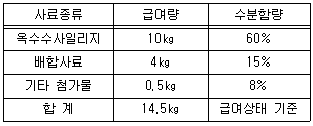
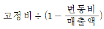
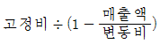
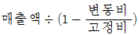
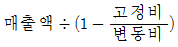
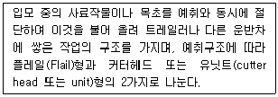

축산산업기사 (2014-09-20 기출문제)
1과목: 가축번식 육종학
1. 다음 중 정액의 희석에 사용되는 희석액이 갖추어야 할 조건으로 적당하지 않은 것은?
- 정자의 생존에 필요한 염류와 영양물질이 들어 있을 것
- pH 변화에 대한 완충작용을 할 수 있을 것
- 세균의 발육을 억제할 수 있을 것
- 산도가 5.0 이하가 되어야 할 것
(정답률: 80%)

2. 다음 중 번식장해를 일으키는 원인과 가장 거리가 먼 것은?
- 유전적 원인
- 해부학적 결함
- 영양장해
- 암소의 성질
(정답률: 79%)
3. 송아지의 근교계수나 어미소의 근교계수가 상승하면 송아지의 이유시 체중은 어떤 영향을 받게 되는가?
- 저하되는 경향이 있다.
- 상승하는 경향이 있다.
- 영향이 없다.
- 상황에 따라 다르다.
(정답률: 72%)
4. 근친교배의 이용에 대한 설명으로 옳지 않은 것은?
- 계통교배법을 이용하고자 할 때
- 특정유전자를 고정하고자 할 때
- 재래종을 개량하고자 할 때
- 근교계통의 육성에 의해 잡종강세를 이용하고자 할 때
(정답률: 65%)
5. 일반적으로 말의 발정지속 기간으로 가장 적합한 것은?
- 13~27시간
- 24~72시간
- 4~7일
- 12~14일
(정답률: 67%)
6. 능력이 부족한 재래종을 개량하는데 흔히 이용되는 교배법은?
- 잡종교배
- 근친교배
- 누진교배
- 순종교배
(정답률: 80%)
7. 태반호르몬이 아닌 것은?
- FSH(난포자극호르몬)
- HCG(융모성 성성자극호르몬)
- PMSG(임마혈청성성선자극호로몬)
- 태반성 락토겐
(정답률: 67%)
8. 2품종간 교잡종의 암퇘지에 제3품종인 수퇘지를 교배시켜서 생산된 돼지를 무엇이라 하는가?
- 1대잡종
- 3원교잡종
- 4원교잡종
- 퇴교배종
(정답률: 82%)
9. 형제 자매간의 교배와 같이 혈연관계가 아주 가까운 개체들끼리의 교배법은?
- 순종교배
- 근친교배
- 계통교배
- 무작위교배
(정답률: 85%)
10. 개체의 유전자형가의 계산에 포함되지 않는 것은?
- 육종가
- 우성효과
- 환경편차
- 상위성효과
(정답률: 66%)
11. 임신축의 생식기관의 변화에 대한 설명으로 옳은 것은?
- 황체가 소실되어 발정주기가 계속된다.
- 자궁근층의 활동으로 자궁 수축이 일어난다.
- 자궁외구가 닫히며 자궁경관이 봉쇄된다.
- 임신기간 전체에 걸쳐 질점막은 붉고 습윤한 상태를 유지한다.
(정답률: 64%)
12. 어느 목장에서 다른 형질들은 모두 만족할 수 있으나 유지율이 낮아 유대 수입이 떨어지는 것이 문제가 되어 정액을 통하여 유지율 개량을 하고자 한다. 종모우 편람에서 다음 중 어느 것이 가장 높은 것을 고르면 되는가?
- PTAM
- PTAT
- PTAF
- TPI
(정답률: 67%)
13. 다음 가축 중 발정주기가 없는 것은?
- 토끼
- 면양
- 돼지
- 말
(정답률: 80%)
14. 닭에서 주로 정액을 채취하는 방법은?
- 인공질법
- 전기자극법
- 정관 팽대부 마사지법
- 복부 마사지법
(정답률: 70%)
15. 일당증체량이 0.85㎏이고 등지방두께가 0.90㎝이며 도체중에 대한 정육율이 75%인 한우의 선발지수는?
- 3.46
- 4.36
- 5.12
- 6.21
(정답률: 42%)
16. 암컷의 생식기간내에서 수정이 이루어지는 부위는?
- 난관 누두부
- 난관 팽대부
- 자궁각
- 자궁체
(정답률: 70%)
17. 소에 있어 이성쌍태를 분만시 암컷은 불임이 되는 경우가 일반적이다. 이와 같은 암컷의 증상은?
- Klinefelter증
- Tuner증
- 프리마틴
- Robertsonian전위
(정답률: 82%)
18. 암가축의 배란과 황체형성에 주로 관여하는 호르몬은?
- FSH(난포자극호르몬)
- LH(황체형성호르몬)
- LTH(황체자극호르몬)
- TSH(갑상선자극호르몬)
(정답률: 81%)
19. 가장 널리 사용되는 젖소의 임신진단법은?
- 외진법
- 질검사법
- 직장검사법
- 초음파 검사법
(정답률: 80%)
20. 다음 중 황체가 존재하는 곳은?
- 난관
- 자궁
- 정소
- 난소
(정답률: 74%)
2과목: 가축사양학
21. 배합사료와 볏짚을 8:2의 비율로 급여할 때 급여되는 전체 사료의 조단백질 함량과 가소화 양분총량(TDN)의 함량은? (단, 배합사료와 볏짚의 조단백질 함량은 10%와 5%이고 TDN 함량은 70%와 30%이다.)
- 조단백질 함량 : 6%, TDN 함량 : 42%
- 조단백질 함량 : 7%, TDN 함량 : 60%
- 조단백질 함량 : 9%, TDN 함량 : 62%
- 조단백질 함량 : 7.5%, TDN 함량 : 67.5%
(정답률: 58%)
22. 다음 중 닭의 영양적 특징 설명으로 옳지 않은 것은?
- 단백질의 대사 배설물은 요산이다.
- 부화된 다음에는 독립적 영양작용을 영위한다.
- 농후사료 위주의 가축이기 때문에 요구되는 비타민이 단순하다.
- 어느 가축보다도 요구되는 영양소가 세밀하게 밝혀져 있다.
(정답률: 65%)
23. 다음 중 당밀에 많이 들어 있는 영양소는?
- 단백질
- 비타민
- 무기질
- 탄수화물
(정답률: 73%)
24. 다음 중 비유 중인 젖소에 가장 많이 필요한 무기물은?
- Ca
- K
- Mg
- Fe
(정답률: 75%)
25. 우유 생산에 필요한 에너지를 계산할 때 반드시 고려해야하는 유성분은?
- 유지방
- 유단백질
- 유당
- 유무기물
(정답률: 67%)
26. 가축의 영양소 공급원 중 체내에서 에너지의 저장형태로 존재하는 것은?
- 탄수화물
- 단백질
- 지방
- 무기물
(정답률: 69%)
27. 다음 중 필수지방산이 아닌 것은?
- arachidonic acid
- linoleic acid
- linolenic acid
- stearic acid
(정답률: 75%)
28. 올인 올아웃 방식은 계사에 병아리를 일시에 입추하여 일시에 출하하는 방법인데 올인 올아웃의 특성이 아닌 것은?
- 전염병이 감염될 위험이 적다.
- 폐사율이 낮게 나타난다.
- 육계의 성장이 빠르고 사료효율이 좋다.
- 계사 이용 및 노동 효율면에서 유리하다.
(정답률: 54%)
29. 4% FCM 우유 1㎏의 열량은 약 어느 정도인가?
- 375㎉
- 750㎉
- 1125㎉
- 1500㎉
(정답률: 64%)
30. 말의 사료로서 가장 이상적이어서 다른 농후사료의 가치를 비교하는 척도가 되는 하나의 표준사료는?
- 옥수수
- 보리
- 귀리
- 호밀
(정답률: 58%)
31. 한우 비육우에 옥수수사일리지 급여상태 기준으로 조단백질이 2%, 수분이 75% 함유되어 있다면 건물기준으로 옥수수사일리지의 조단백질 함량은 몇 %인가?
- 6
- 7
- 8
- 9
(정답률: 46%)
32. 양계사료의 저장성을 높이고 영양소의 산화방지를 위해 첨가하는 항산화제 중 천연항산화제는?
- DPPD
- BHT
- BHA
- ascorbic acid
(정답률: 67%)
33. 산란계의 점등시 유의해야 할 점으로 옳은 것은?
- 산란기에 들어가서는 한 번 연장한 점등시간은 절대로 감소해서는 안된다.
- 자연일조 조건에서 점등시간의 연장은 주로 저녁으로 집중하는 것이 좋다.
- 평사일 경우에는 높은 측광에서 바로 소등한다.
- 무창계사의 경우라도 빛이 들어오는 최소 구멍을 설치하여야 한다.
(정답률: 63%)
34. 다음 중 젖소에서 필요한 비타민 중 사양표준에 그 소요량이 표시되는 것은?
- 비타민 B
- 비타민 D
- 비타민 C
- 비타민 K
(정답률: 68%)
35. 한우 번식우가 다음과 같은 양의 사료를 급여상태 기준으로 섭취한다면 이 한우가 하루에 섭취하는 건물량은 얼마인가?

- 7.86㎏
- 8.86㎏
- 9.86㎏
- 10.89㎏
(정답률: 55%)
36. 가축의 번식에 관여하는 영양소는 에너지, 단백질, 무기물 및 비타민 등이 있는데 이들 영양소와의 관계 설명으로 옳지 않은 것은?
- 처녀우에 에너지와 단백질 공급이 부족하게 되면 불규칙한 발정과 수태율 저하가 초래된다.
- 다량광물질 중 번식과 가장 밀접한 것이 칼슘이며 이것이 결핍되면 발정지연, 수태율 저하, 심하면 발정이 중지된다.
- 비타민 A가 결핍되면 수정율 저하, 유산, 사산, 허약한 새끼분만 및 태반정체를 초래한다.
- 비타민 E가 부족하면 소 • 면양 등에서 근육위축증을 일으키고 닭에서는 근육위축증, 삼출성 소질로 되고 보행장애, 경련을 일으킨다.
(정답률: 63%)
37. 비육은 체지방을 증가시키는 것이 목적이다. 비육을 위한 에너지의 공급량은?
- 초기보다 비육말기에 더 많은 에너지를 공급
- 말기보다 비육중기에 더 많은 에너지를 공급
- 중기보다 초기에 더 많은 에너지를 공급
- 초기보다 중기에 더 많은 에너지를 공급
(정답률: 67%)
38. 질이 좋은 목건초 분말에 당밀 등을 섞어서 단단한 장방형으로 가온•고압하에서 성형하여 만든 사료는?
- 가루사료
- 펠렛사료
- 크럼블사료
- 큐브사료
(정답률: 62%)
39. 일반적으로 대두박의 조단백질 함량은 평균 얼마인가?
- 5~10%
- 40~50%
- 65~75%
- 85~90%
(정답률: 61%)
40. 비육에 필요한 단백질 요구량을 바르게 설명한 것은?
- 비육에는 단백질이 필요 없다.
- 유지에 필요한 단백질량보다 좀 더 주는게 좋다.
- 증가되는 에너지의 요구량 만큼 더 주는게 좋다.
- 유지에 필요한 단백질량보다 좀 낮게 주는게 경제적이다.
(정답률: 58%)
3과목: 축산경영학
41. 생산비에 대한 설명으로 옳지 않은 것은?
- 화폐가치로 표시할 수 있어야 한다.
- 천재지변에 의한 손실도 생산비에 포함된다.
- 생산물을 위해 직접 소비되는 것이어야 한다.
- 정상적인 생산활동을 위하여 소비된 것이어야 한다.
(정답률: 73%)
42. 손익분기점 생산량 산출 공식으로 옳은 것은?




(정답률: 63%)
43. 사료급여량을 1㎏에서 2㎏로 증가시키면 한우의 체중량은 2㎏에서 10㎏로 늘어날 때의 한계생산물을 얼마인가?
- 6
- 8
- 10
- 12
(정답률: 66%)
44. 고용 노동력과 비교하였을 때 가족 노동력에 대한 설명으로 옳지 않은 것은?
- 노동시간에 제한을 받지 않는다.
- 노동에 대한 감독이 필요치 않다.
- 노동력의 성과가 소득과 직결된다.
- 노동 기간에 따라 연고, 계절고, 일고, 청부 등이 있다.
(정답률: 77%)
45. 대규모 축산경영이 갖는 장점으로 옳지 않은 것은?
- 생산된 축산물을 표준화함으로 유통에 유리하다.
- 축산물의 경기변동에 신축적으로 대응하여 휴•폐업할 수 있다.
- 생산량 증가에 따라 고정비용이 분산되므로 자본생산성이 확대된다.
- 1인당 사육두수가 많아서 노동비가 절감되어 노동생산성을 향상시킬 수 있다.
(정답률: 69%)
46. 축산자본 생산성을 구하는 공식으로 옳은 것은?
- 소득 ÷ 노동투하액
- 소득 ÷ 자본투하액
- 자본투하액 ÷ 노동투하액
- 사료급여량 ÷ 축산물생산량
(정답률: 55%)
47. 양돈의 비육경영 수익성을 높이기 위한 방법으로 옳은 것은?
- 연간 분만횟수 증가
- 종돈의 사육비용 절약
- 분만두수가 많은 종돈 선택
- 판매돈 1마리당 표준비용 감소
(정답률: 50%)
48. 축산경영자에 대한 설명으로 옳지 않은 것은?
- 축산경험이 있어야하고 관련 학위가 있어야 한다.
- 경영체를 운영하는데 있어서 목표가 있어야 한다.
- 축산경영을 합리적으로 운영하기 위한 경영 주체이다.
- 축산경영과정에 있어서 야기되는 중요한 의사결정권자이다.
(정답률: 78%)
49. 손익계산서에 포함되지 않는 기록 항목은?
- 이자
- 사료비
- 당좌예금
- 우유판매수입
(정답률: 65%)
50. 축산경영의 경제적 특징으로 옳지 않은 것은?
- 토지의 이용 증진
- 자금회전의 원활화
- 생산물의 저장력 증가
- 노동력의 생산성 향상
(정답률: 55%)
51. 축산경영의 위한 토지의 성질에 대한 설명으로 옳지 않은 것은?
- 토지는 자유롭게 윰직일 수 없다.
- 토지는 임의로 증가 또는 확장할 수 없다.
- 토지는 다른 생산재와 달리 사용함에 의해 소모되지 않는다.
- 토지는 이용이 많아지면 지력이 약해져 더 이상 사용할 수 없다.
(정답률: 76%)
52. 양돈농가가 완전경쟁 하에서 시장가격 P에 돼지를 출하하고 있다. 이윤이 최대인 이론적 조건으로 옳은 것은?
- 평균비용과 한계비용이 일치
- 평균비용과 한계수익이 일치
- 한계비용과 한계수익이 일치
- 한계비용과 평균가변비용이 일치
(정답률: 56%)
53. 축산경영조직에 영향을 미치는 요인으로 가장 거리가 먼 것은?
- 기후, 강우량, 일조량 등의 자연적 조건
- 외국인 노동자 입국자 수 등 노동과의 조건
- 축산 진흥정책 및 축산단체 유무 등의 사회적 조건
- 경제적인 거리 및 축산물 가격 등의 시장과의 조건
(정답률: 69%)
54. 축산물 유통기능 중 시간적, 장소적, 형태적 효용을 창출하는 물적기능에 해당하지 않는 것은?
- 저장기능
- 운송기능
- 판매기능
- 가공기능
(정답률: 62%)
55. 축산물의 정전가격(문전가격)이란?
- 시장가격 그 자체
- 축산물 소비자가격과 농가수취가격의 차액
- 축산물 시장가격에서 판매 제비용을 감한 가격
- 축산물 시장가격에서 판매 제비용을 합한 가격
(정답률: 66%)
56. 생산함수에서 생산물 상호간의 관계에 대한 설명으로 옳은 것은?
- 총생산물이 증가하면 평균생산물도 계속 증가한다.
- 총생산물이 최소인 점에서 한계생산물은 영(0)이 된다.
- 한계생산물이 평균생산물보다 클 경우 평균생산물은 감소한다.
- 한계생산물과 평균생산물이 동일한 경우 평균생산물은 최대가 된다.
(정답률: 54%)
57. 우유 판매수입이 6000원이고 구입사료비가 1200원일 때 유사비율은 얼마인가?
- 20%
- 25%
- 30%
- 35%
(정답률: 67%)
58. 축산경영의 적정규모 산출 방법으로 옳지 않은 것은?
- 최소자본 규모의 산출
- 평균비용곡선 상의 최저점 산출
- 적자생존법에 의한 적정규모 계층의 확인
- 서로 다른 규모간의 단위 생산비를 직접 비교
(정답률: 37%)
59. 축산물 생산지와 시장간 경제적 거리에 관한 설명으로 옳은 것은?
- 일반적으로 생산지 입지선정 요건과는 무관하다.
- 경제적 거리가 멀수록 생산자의 수취가격은 높다.
- 토지이용형 축산은 대소비지와 가까이 위치하고 있다.
- 생산지에서 시장까지 이동시간과 운송비를 고려한 것이다.
(정답률: 70%)
60. 매회계년도의 상각비를 일정한 금액으로 결정하는 감가상각비 계산 방법은?
- 정액법
- 비례법
- 급수법
- 체감잔액법
(정답률: 77%)
4과목: 사료작물학
61. 콩과 사료작물의 일반적 특징에 해당되는 것은?
- 뿌리 : 직근(곧은 뿌리)
- 열매 : 씨방벽에 융합
- 줄기 : 둥글고 마디
- 잎 : 나란히 맥
(정답률: 65%)
62. 연맥(귀리)에 대한 설명으로 옳은 것은?
- 봄 파종의 경우 5~6월경이 파종적기이다.
- 옥수수 수확 후 가을에 파종하여 이른 봄에 청예로 이용한다.
- 봄 연맥은 유숙기에서 호숙기 사이에 예취하여 사일리지로 한다.
- 파종량은 가을파종에서 ㏊ 당 150㎏ 정도이지만 봄파종에서는 10% 정도 증가한다.
(정답률: 50%)
63. 남방형 목초의 생육적온은?
- 5~10℃
- 15~20℃
- 30~35℃
- 50~55℃
(정답률: 64%)
64. 목초 유식물의 억압력 지수는 초기 생육과 관련이 있다. 다음 중 억압력 지수가 가장 높은 초종은?
- 이탈리안 라이그라스
- 오차드 그라스
- 톨 페스큐
- 벤트 그라스
(정답률: 57%)
65. 2차발효란 사일로를 개봉한 후 사일리지가 공기에 접하면 그 부분에 효모나 곰팡이 등의 호기성 미생물이 증식하여 열을 발생하며 변패하는 것을 말한다. 2차발효가 발생하기 쉬운 조건에 대한 설명으로 틀린 것은?
- 양질의 사일리지보다 낙산함량이 높은 불량한 사일리지에서 잘 발생한다.
- 효모와 곰팡이는 높은 기온에서 활발히 증식하므로 고온에서 조제한 사일리지에서 발생하기 쉽다.
- 사일리지의 밀도가 낮으면 개봉 후 공기가 침입하기 쉬워지므로 발생하기 쉽다.
- 일일 사일리지를 퍼내는 양이 적으면 퍼낸 부분의 사일리지가 항상 공기에 접하고 있어 발생하기 쉽다.
(정답률: 46%)
66. 다음 사일로 중 부패손실이 가장 큰 것은?
- 탑형 사일로
- 스택 사일로
- 벙커 사일로
- 기밀 사일로
(정답률: 67%)
67. 사일리지용 옥수수의 파종시기에 대한 설명 중 틀린 것은?
- 벚꽃이 만개할 무렵
- 냉해를 받지 않는 조건에서 가능한 한 빨리 파종
- 수단그라스계 잡종 파종 후 2~3일 후
- 평균기온 10℃가 5일 이상 유지될 때
(정답률: 58%)
68. 북방형 목초가 아닌 것은?
- 티머시
- 달리스 그라스
- 오차드 그라스
- 이탈리안 라이그라스
(정답률: 50%)
69. 다음 중 중부 이북지방에서 추파 월동이 어려운 목초는?
- 오차드 그라스
- 티머시
- 이탈리안 라이그라스
- 화이트 클로버
(정답률: 68%)
70. 수수 및 수단그라스계 잡종의 듀린 물질로부터 생성되는 유독성 물질은?
- 청산
- 질산
- 알카로이드
- 테타니병
(정답률: 72%)
71. 혼파초지의 일반관리에 대한 설명 중 틀린 것은?
- 예취시기가 늦어질수록 수량은 증가하나 질은 떨어진다.
- 첫 번째 예취가 빠를수록 화이트클로버의 비율이 많아진다.
- 마지막 예취는 서리 오기 전 40일전에 하는 것이 좋다.
- 상번초는 하번초에 비하여 예취높이에 영향을 받지 않는다.
(정답률: 73%)
72. 호밀의 적정 파종량이 10a에 19㎏이고 파종하려는 종자의 발아율이 80%라면 10a당 이 종자의 파종량은?
- 20.7㎏
- 23.8㎏
- 25.7㎏
- 26.7㎏
(정답률: 59%)
73. 수단그라스가 500m2에 3000㎏이 생산되었다면 10a 수량은?
- 3000㎏
- 4000㎏
- 5000㎏
- 6000㎏
(정답률: 70%)
74. 사일리지 제조용 옥수수의 수확 적기는? (단, 수분함량이 약 68~70%)
- 영양생장기
- 출수기
- 개화기
- 황숙기
(정답률: 76%)
75. 중부지방에서 청예용 유채를 옥수수 후작으로 파종시 적기는?
- 7월 중순 ~ 8월 상순
- 8월 중순 ~ 9월 상순
- 9월 중순 ~ 10월 상순
- 10월 중순 ~ 11월 상순
(정답률: 49%)
76. 콩과목초를 청예나 건초로 이용할 때 수확 적기는?
- 개화초기
- 만개화기
- 결실기
- 출뢰전기
(정답률: 74%)
77. 반추가축의 고창증을 잘 유발시키는 사료작물은?
- 버즈풋 트레포일
- 크라운베치
- 레드클로버
- 매듭풀
(정답률: 52%)
78. 다음에서 설명하는 기계는 무엇인가?

- 헤이컨디셔너
- 테더
- 레이크
- 포레이지 하베스터
(정답률: 65%)
79. 톨 페스큐의 엔도파이트 진균병에 관한 설명으로 가장 적합한 것은?
- 잎에 검은 녹이 발생한다.
- 감염된 종자로부터 전파된다.
- 봄철에서 초가을까지 만연한다.
- 증체량 등 가축 생산성과 관련이 없다.
(정답률: 66%)
80. 다음 목초 중 다발형 목초로 짝지어진 것은?
- 오차드 그라스, 티머시
- 켄터키 블루그라스, 페레니얼 라이그라스
- 톨 페스큐, 이탈리안 라이그라스
- 리드카나리그라스, 레드톱
(정답률: 51%)